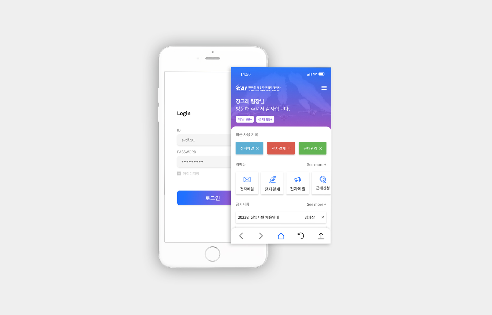
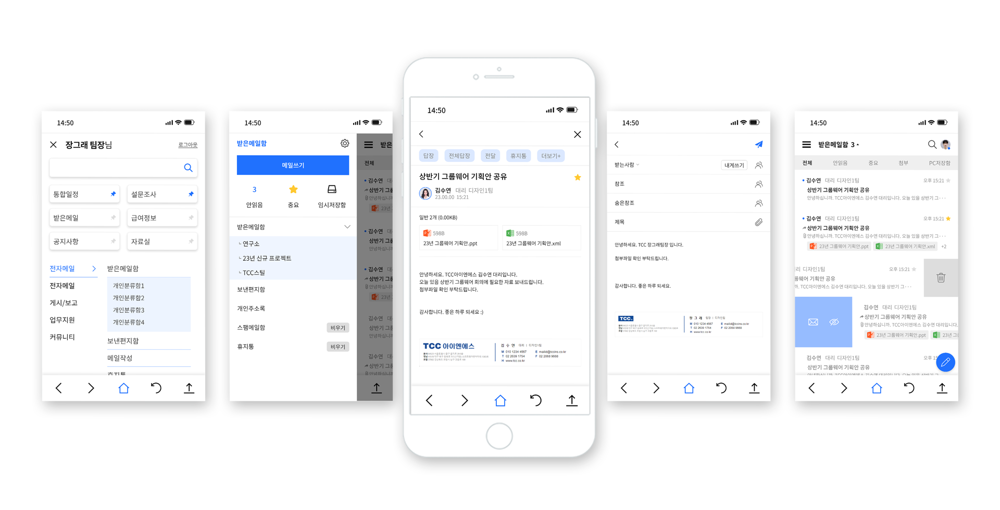

카이 그룹웨어 리뉴얼구축
OVERVIEW
"카이"의 그룹웨어 리뉴얼 디자인을 진행하였습니다. 이번 프로젝트에서는 기본 그룹웨어 디자인 외에도 카이 기업의 요구를 반영하여 "애자일스페이스", "전자도서관", "나눔봉사단", "설문조사" 등의 페이지를 포함하였습니다. 메인 컬러는 카이의 브랜드 컬러인 파란색 계열을 선택하여 일관성을 유지하였으며, 사용자 편의성을 최우선으로 고려한 UI/UX 디자인을 적용하였습니다. 또한, 모바일 그룹웨어 앱 디자인도 새롭게 진행하였는데, 기존 앱 디자인과 레이아웃을 전면 개편하였습니다. 기존 그룹웨어는 기능적인 부분만 제공되어 한눈에 파악하기 어려운 문제가 있었으나, 이번 새로운 앱 디자인에서는 PC처럼 한눈에 업무를 파악할 수 있도록 설계하였습니다. 이로써 사용자들은 더욱 편리하게 그룹웨어를 활용할 수 있게 되었습니다.
- TYPE.
- Web Design
- CLIENT.
- 카이 그룹웨어 리뉴얼
- Individual work.
- 2022.12 (1 Month)
- 작업내역
-
포토샵
XD
일러스트
고객의 만족을 위한 다양한 테마컨셉의 시안 디자인
신한금융그룹 시안디자인에서는 아름답기만 한 디자인이 아닌
실제 사용하는 고객들의 연령과 업무의 효율을 두어야 한다는 점을 더 비중을 두어 디자인 하였으며,
레이아웃컨셉을 다양화 하여, 고객이 제일 편안하게 업무에 임할 수 있도록 선택의 폭을 다양하게 제공하였습니다.

